Candidate List 20260719Last night — ZTF: 3,989 passed basic cuts (229 young) · LSST: 0 passed basic cuts (0 young)Previous Day Next Day
Section 1: New Sources (age<1d) Section 2: Old (1-5d) sources observed last nightplaceholder
Section 1: New Afterglow/FBOT Cands Last Night (6)
1. [ZTF] ZTF26abhycxx (FBOT?) [Back to Top] [Share] [Trigger Swift] [Fritz Alert] [Fritz Source] [Lasair]RA, Dec: 280.99357, 24.37805 18h43m58.46s, 24d22m40.97sGalactic (l, b): 54.17126, 12.39233 ext(g-r) = 0.127


TESS: Sectors [ 26 40 53 54 80 118 119]
PS1: 1 source in 3 arcsec Closest: d = 8.74 arcsec photoz=0.42+/-0.06 peak abs mag = -25.60
LegacySurvey: 0 sources in 3 arcsec

Extinction-corrected gr color:
From alerts: -0.29 +/- 0.05 mag
Rise Rate:
g: 2.02 mag/day
r: 2.04 mag/day
Fade Rate:
2. [ZTF] ZTF26abhzlwo (Afterglow?) [Back to Top] [Share] [Trigger Swift] [Fritz Alert] [Fritz Source] [Lasair]RA, Dec: 257.9205, 51.38024 17h11m40.92s, 51d22m48.85sGalactic (l, b): 78.40368, 36.19139 ext(g-r) = 0.035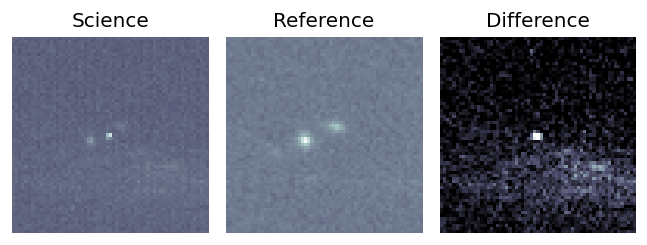
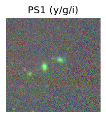
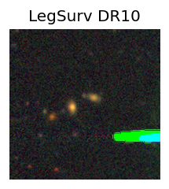
TESS: Sectors [ 24 25 26 40 50 51 52 53 57 60 77 78 79 80 84 118]
PS1: 0 sources in 3 arcsec
LegacySurvey: 1 sources in 3 arcsec Closest: d = 3.84 arcsec, 4.6 deg (east of north) photoz=0.65 (68% bounds 0.42, 0.85), type=REX peak abs mag = -23.63 (68% bounds -22.5, -24.36)
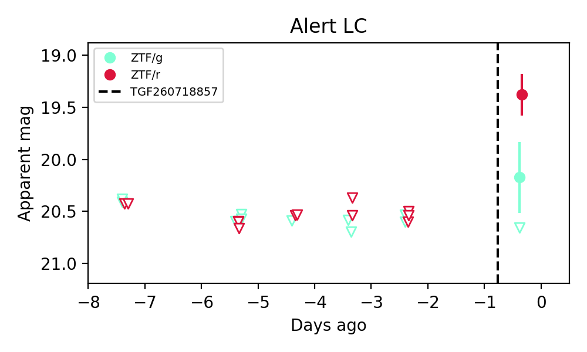
Extinction-corrected gr color:
From alerts: 0.76 +/- 0.39 mag
Consistent with synchrotron, g-r>0!
Rise Rate:
r: 0.61 mag/day
Fade Rate:
3. [ZTF] ZTF26abhzxgh (Afterglow?) [Back to Top] [Share] [Trigger Swift] [Fritz Alert] [Fritz Source] [Lasair]RA, Dec: 296.84422, 48.17621 19h47m22.61s, 48d10m34.37sGalactic (l, b): 81.63766, 11.32512 ext(g-r) = 0.112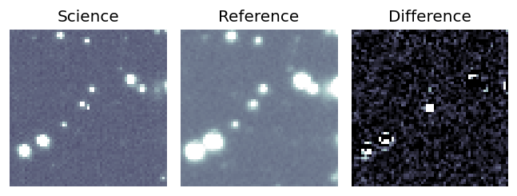
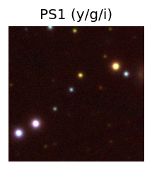

TESS: Sectors [ 14 15 41 54 55 56 74 75 119 120 121]
PS1: 0 sources in 3 arcsec
LegacySurvey: 0 sources in 3 arcsec
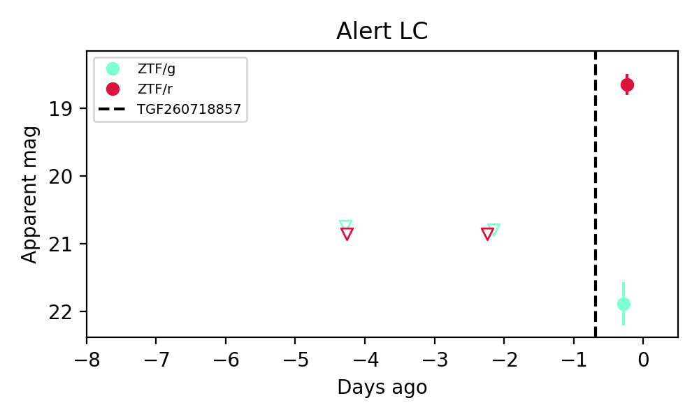
Extinction-corrected gr color:
From alerts: 3.12 +/- 0.35 mag
Consistent with synchrotron, g-r>0!
Rise Rate:
r: 1.1 mag/day
Fade Rate:
4. [ZTF] ZTF26abiaads (FBOT?) [Back to Top] [Share] [Trigger Swift] [Fritz Alert] [Fritz Source] [Lasair]RA, Dec: 288.38031, 1.77909 19h13m31.27s, 1d46m44.73sGalactic (l, b): 37.04135, -4.09589 ext(g-r) = 0.701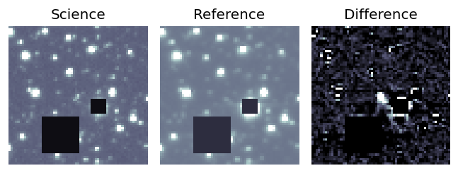
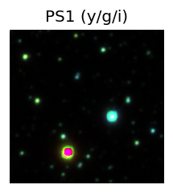

TESS: Sectors [54 80]
PS1: 1 source in 3 arcsec Closest: d = 2.02 arcsec photoz=0.05+/-0.03 peak abs mag = -19.50
LegacySurvey: 0 sources in 3 arcsec
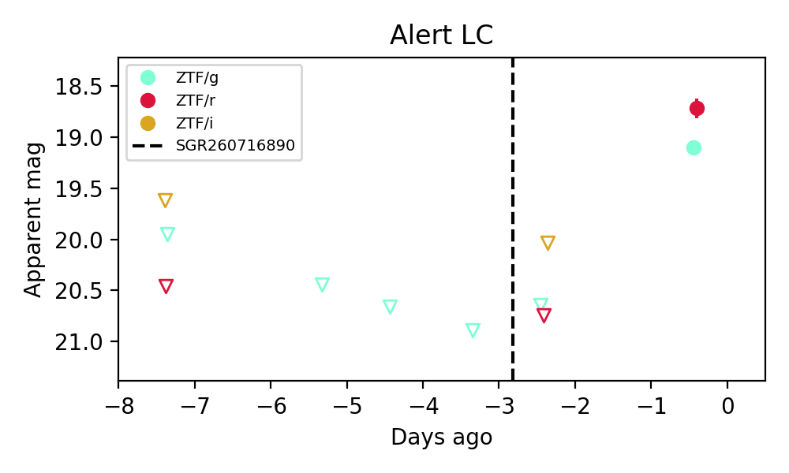
Extinction-corrected gr color:
From alerts: -0.32 +/- 0.12 mag
Rise Rate:
g: 0.76 mag/day
r: 1.01 mag/day
Fade Rate:
5. [ZTF] ZTF26abiabnk (Afterglow?) [Back to Top] [Share] [Trigger Swift] [Fritz Alert] [Fritz Source] [Lasair]RA, Dec: 290.5153, -14.38052 19h22m3.67s, -14d-22m-49.86sGalactic (l, b): 23.34256, -13.1852 ext(g-r) = 0.196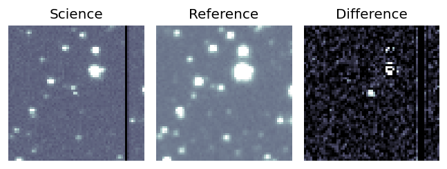
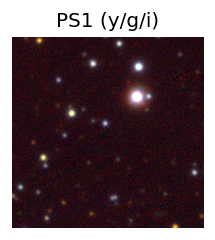

TESS: Sectors [ 54 80 92 116]
PS1: 0 sources in 3 arcsec
LegacySurvey: 0 sources in 3 arcsec
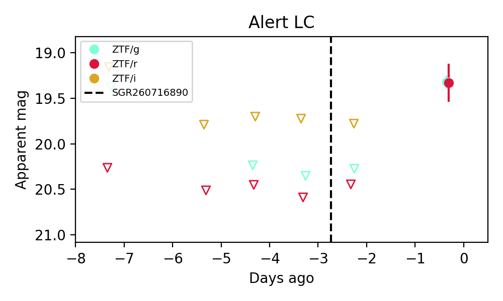
Extinction-corrected gr color:
From alerts: -0.2 +/- 0.22 mag
Consistent with synchrotron, g-r>0!
Rise Rate:
g: 0.5 mag/day
r: 0.55 mag/day
Fade Rate:
6. [ZTF] ZTF26abiafjl (Afterglow?) [Back to Top] [Share] [Trigger Swift] [Fritz Alert] [Fritz Source] [Lasair]RA, Dec: 285.77136, 1.01511 19h 3m5.13s, 1d 0m54.39sGalactic (l, b): 35.16441, -2.12766 ext(g-r) = 2.227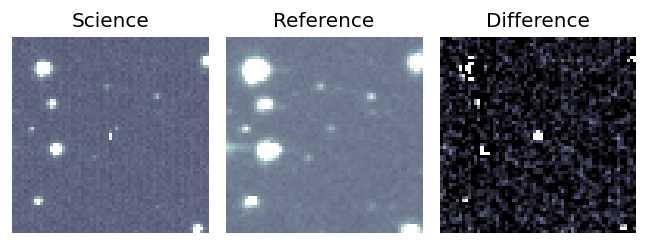
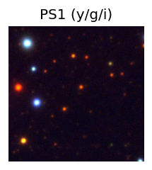

TESS: Sectors [54 80]
PS1: 0 sources in 3 arcsec
LegacySurvey: 0 sources in 3 arcsec
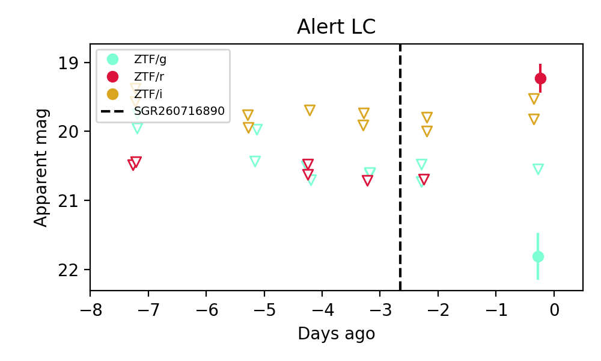
Extinction-corrected gr color:
From alerts: 0.36 +/- 0.4 mag
Extinction-corrected gi color:
From alerts: -1.44 +/- 99 mag
Extinction-corrected ri color:
From alerts: -1.8 +/- 99 mag
Consistent with synchrotron, g-r>0!
Rise Rate:
r: 0.73 mag/day
Fade Rate:
Section 2: Older Sources Observed Last Night (25)
0. [ZTF] ZTF26abgvfty (FBOT?) [Back to Top] [Share] [Trigger Swift] [Fritz Alert] [Fritz Source] [Lasair]RA, Dec: 266.21331, 14.91474 17h44m51.19s, 14d54m53.07sGalactic (l, b): 39.27074, 21.32877 ext(g-r) = 0.096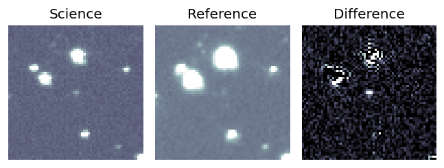
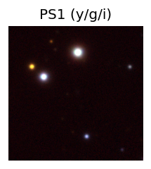
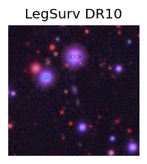
TESS: Sectors [ 26 53 79 80 118]
PS1: 0 sources in 3 arcsec
LegacySurvey: 1 sources in 3 arcsec Closest: d = 0.41 arcsec, 321.9 deg (east of north) photoz=0.19 (68% bounds 0.15, 0.29), type=SER peak abs mag = -20.42 (68% bounds -19.76, -21.42)
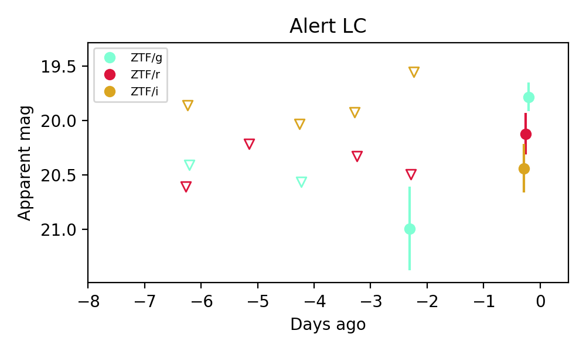
Extinction-corrected gr color:
From alerts: 0.08 +/- 0.21 mag
Extinction-corrected gi color:
From alerts: -0.18 +/- 0.28 mag
Extinction-corrected ri color:
From alerts: -0.26 +/- 0.26 mag
Consistent with synchrotron, g-r>0!
Rise Rate:
r: 0.22 mag/day
i: 0.14 mag/day
Fade Rate:
1. [ZTF] ZTF26abhdpzr (Afterglow?) [Back to Top] [Share] [Trigger Swift] [Fritz Alert] [Fritz Source] [Lasair]RA, Dec: 350.37457, 71.73084 23h21m29.90s, 71d43m51.02sGalactic (l, b): 115.93757, 10.09111 ext(g-r) = 0.517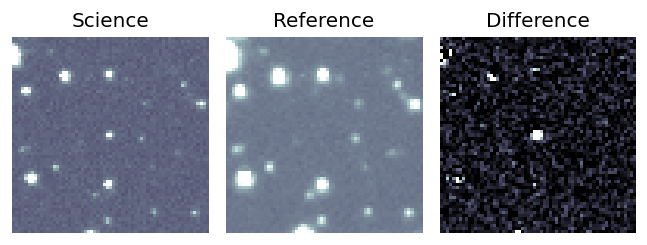
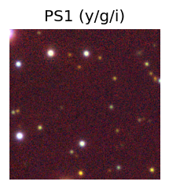

TESS: Sectors [17 18 24 25 52 58 77 85 86]
PS1: 0 sources in 3 arcsec
LegacySurvey: 0 sources in 3 arcsec
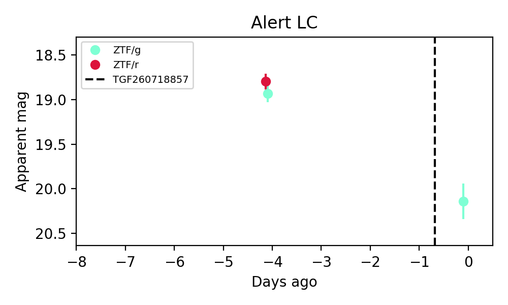
Extinction-corrected gr color:
From alerts: -0.38 +/- 0.13 mag
Rise Rate:
g: 0.17 mag/day
r: 0.2 mag/day
Fade Rate:
g: 0.3 mag/day
2. [ZTF] ZTF26abgztiu (Afterglow?) [Back to Top] [Share] [Trigger Swift] [Fritz Alert] [Fritz Source] [Lasair]RA, Dec: 290.6741, -0.14409 19h22m41.78s, 0d-8m-38.71sGalactic (l, b): 36.38391, -7.01658 ext(g-r) = 0.439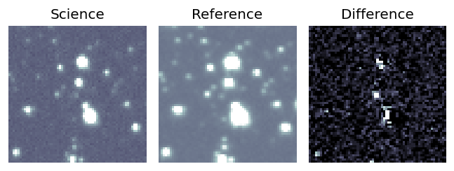
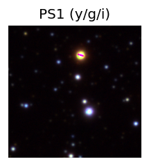

TESS: Sectors [54 80 81]
PS1: 1 source in 3 arcsec Closest: d = 2.46 arcsec photoz=0.24+/-0.07 peak abs mag = -23.30
LegacySurvey: 0 sources in 3 arcsec
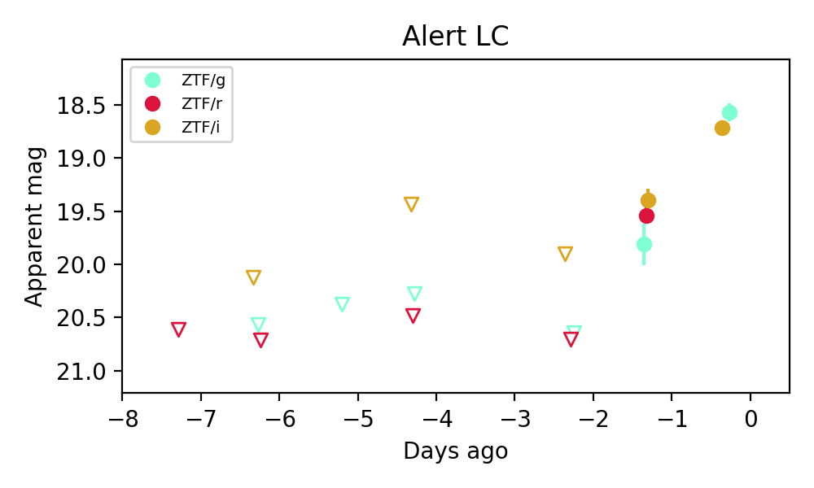
Extinction-corrected gr color:
From alerts: -0.17 +/- 0.21 mag
Extinction-corrected gi color:
From alerts: -0.69 +/- 0.13 mag
Extinction-corrected ri color:
From alerts: -0.09 +/- 0.13 mag
Consistent with synchrotron, g-r>0!
Rise Rate:
g: 1.05 mag/day
r: 1.21 mag/day
i: 0.59 mag/day
Fade Rate:
3. [ZTF] ZTF26abhawqk (Afterglow?) [Back to Top] [Share] [Trigger Swift] [Fritz Alert] [Fritz Source] [Lasair]RA, Dec: 284.1231, -23.87794 18h56m29.54s, -23d-52m-40.59sGalactic (l, b): 11.92432, -11.68461 WARNING: -1.07 deg from ecliptic plane ext(g-r) = 0.218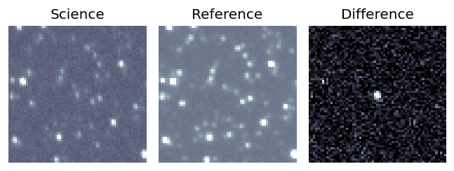
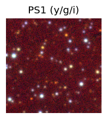

TESS: Sectors 92
PS1: 0 sources in 3 arcsec
LegacySurvey: 0 sources in 3 arcsec
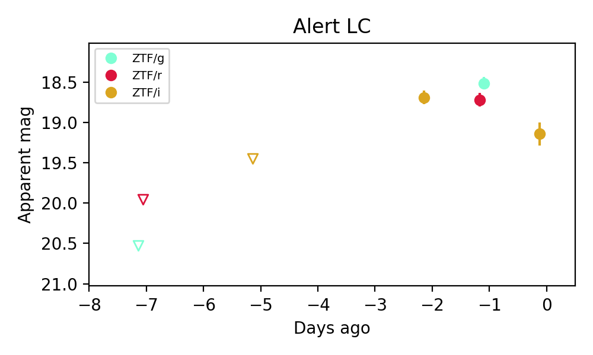
Extinction-corrected gr color:
From alerts: -0.42 +/- 0.11 mag
Rise Rate:
g: 0.33 mag/day
r: 0.21 mag/day
i: 0.25 mag/day
Fade Rate:
g: 0.23 mag/day
i: 0.22 mag/day
4. [ZTF] ZTF26abhgzpe (FBOT?) [Back to Top] [Share] [Trigger Swift] [Fritz Alert] [Fritz Source] [Lasair]RA, Dec: 236.2832, 53.40164 15h45m7.97s, 53d24m5.92sGalactic (l, b): 84.53183, 48.71685 ext(g-r) = 0.017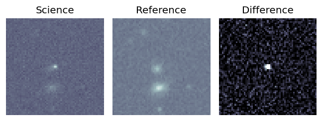
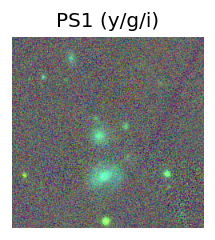
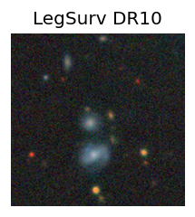
TESS: Sectors [16 23 24 49 50 51 76 77 78]
SDSS (<15 kpc):Found SDSS phot-z: z=0.11; peak abs mag = -19.74
PS1: 0 sources in 3 arcsec
LegacySurvey: 1 sources in 3 arcsec Closest: d = 1.84 arcsec, 18.4 deg (east of north) photoz=0.91 (68% bounds 0.52, 1.24), type=PSF peak abs mag = -24.94 (68% bounds -23.44, -25.76)
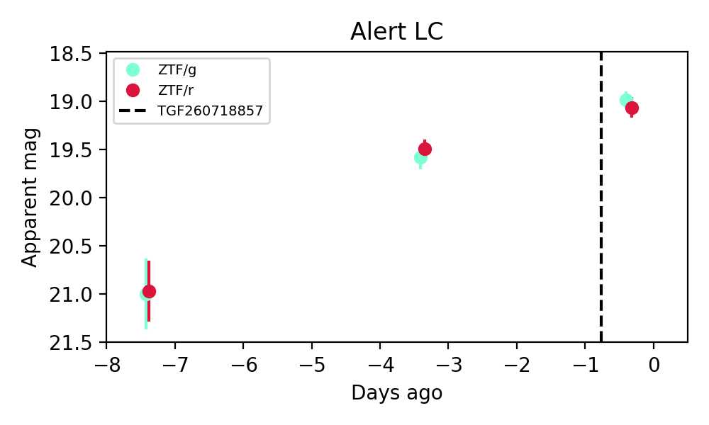
Extinction-corrected gr color:
From alerts: -0.1 +/- 0.14 mag
Consistent with synchrotron, g-r>0!
Rise Rate:
g: 0.24 mag/day
r: 0.21 mag/day
Fade Rate:
5. [ZTF] ZTF26abhwvho (FBOT?) [Back to Top] [Share] [Trigger Swift] [Fritz Alert] [Fritz Source] [Lasair]RA, Dec: 228.83471, 9.0825 15h15m20.33s, 9d 4m57.02sGalactic (l, b): 11.82617, 51.5537 ext(g-r) = 0.036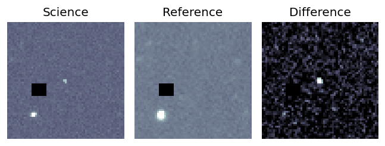
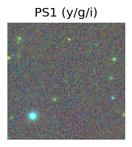
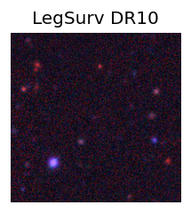
TESS: Sectors 51
PS1: 0 sources in 3 arcsec
LegacySurvey: 1 sources in 3 arcsec Closest: d = 0.73 arcsec, 104.8 deg (east of north) photoz=1.17 (68% bounds 1.0, 1.33), type=REX peak abs mag = -25.53 (68% bounds -25.12, -25.88)
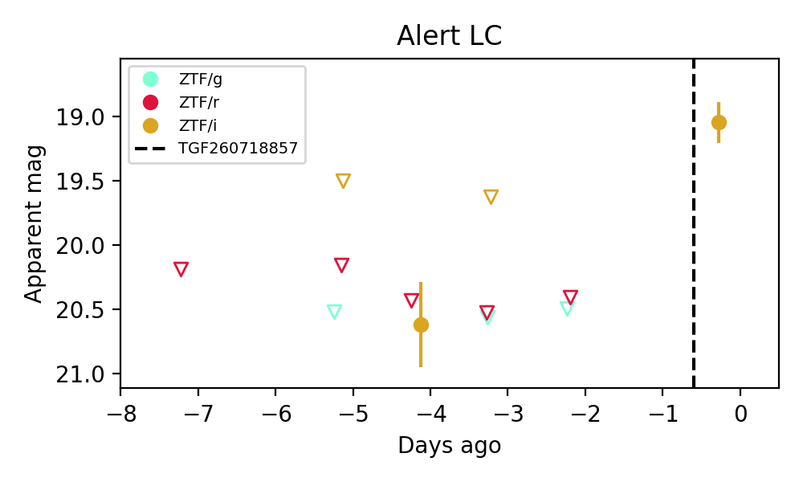
Extinction-corrected ri color:
From alerts: -0.2 +/- 99 mag
Rise Rate:
i: 0.41 mag/day
Fade Rate:
6. [ZTF] ZTF26abhwzhs (Afterglow?) [Back to Top] [Share] [Trigger Swift] [Fritz Alert] [Fritz Source] [Lasair]RA, Dec: 278.04246, 12.04112 18h32m10.19s, 12d 2m28.04sGalactic (l, b): 41.5796, 9.6841 ext(g-r) = 0.37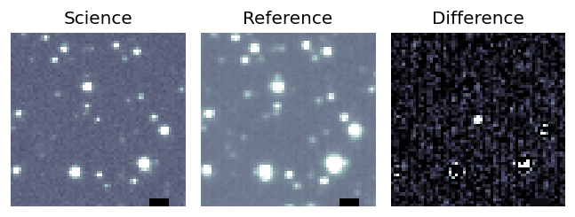
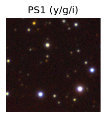

TESS: Sectors [ 80 118]
PS1: 0 sources in 3 arcsec
LegacySurvey: 0 sources in 3 arcsec
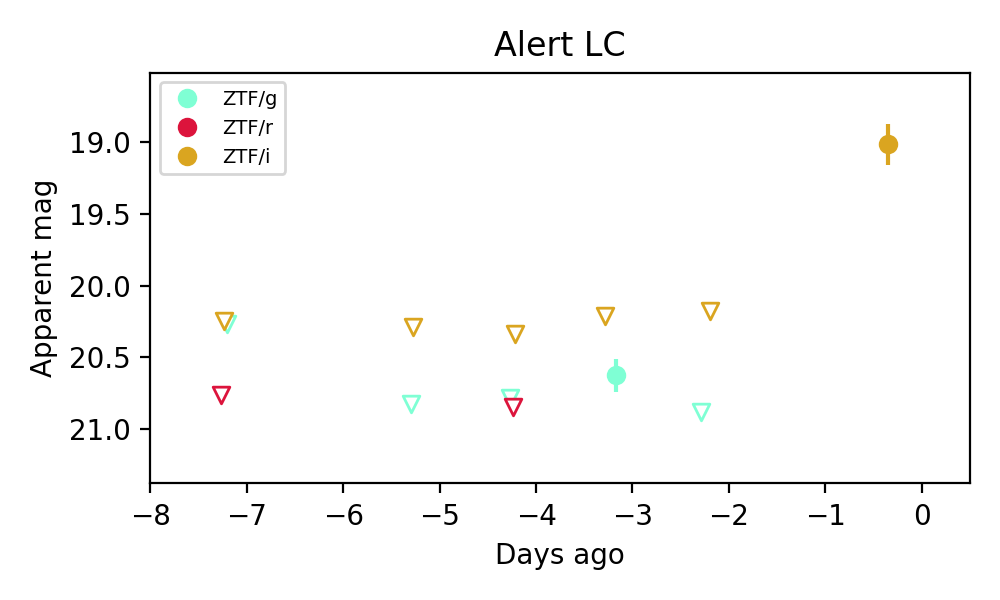
Extinction-corrected gi color:
From alerts: -0.16 +/- 99 mag
Rise Rate:
g: 0.07 mag/day
i: 0.63 mag/day
Fade Rate:
g: 0.29 mag/day
7. [ZTF] ZTF26abhxahp (FBOT?) [Back to Top] [Share] [Trigger Swift] [Fritz Alert] [Fritz Source] [Lasair]RA, Dec: 264.30925, 15.0725 17h37m14.22s, 15d 4m21.02sGalactic (l, b): 38.63113, 23.07721 ext(g-r) = 0.08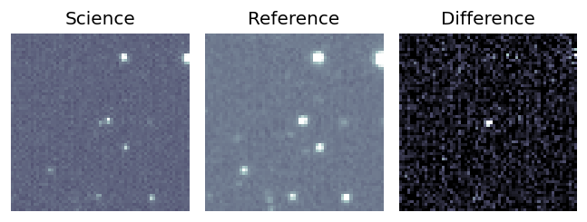
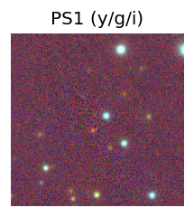
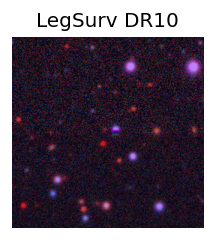
TESS: Sectors [ 26 52 53 79 118]
PS1: 0 sources in 3 arcsec
LegacySurvey: 1 sources in 3 arcsec Closest: d = 1.48 arcsec, 49.5 deg (east of north) photoz=0.88 (68% bounds 0.72, 1.03), type=REX peak abs mag = -24.28 (68% bounds -23.74, -24.69)
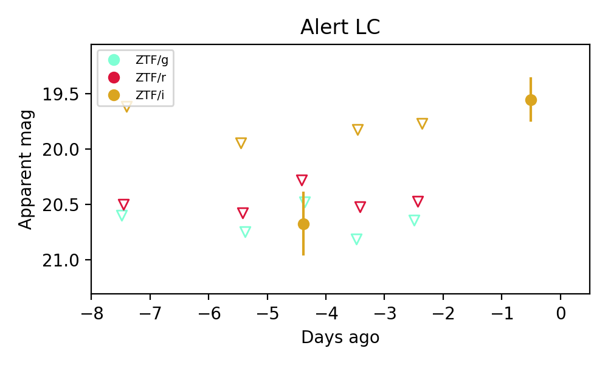
Extinction-corrected gi color:
From alerts: -0.32 +/- 99 mag
Extinction-corrected ri color:
From alerts: -0.44 +/- 99 mag
Rise Rate:
i: 0.29 mag/day
Fade Rate:
8. [ZTF] ZTF26abhxixb (FBOT?) [Back to Top] [Share] [Trigger Swift] [Fritz Alert] [Fritz Source] [Lasair]RA, Dec: 259.76487, 8.93178 17h19m3.57s, 8d55m54.42sGalactic (l, b): 30.50506, 24.56091 ext(g-r) = 0.117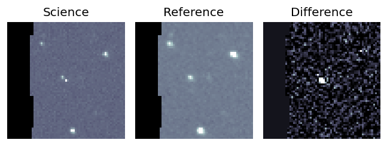
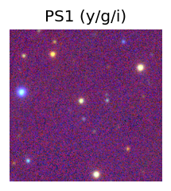
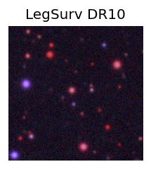
TESS: Sectors 118
PS1: 0 sources in 3 arcsec
LegacySurvey: 1 sources in 3 arcsec Closest: d = 2.47 arcsec, 55.7 deg (east of north) photoz=0.16 (68% bounds 0.02, 0.74), type=PSF peak abs mag = -21.24 (68% bounds -16.68, -25.06)
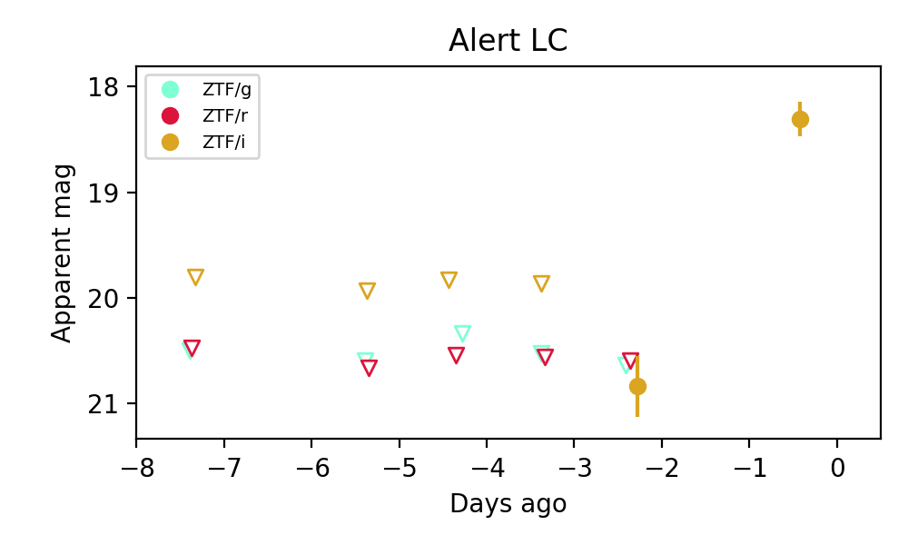
Extinction-corrected gi color:
From alerts: -0.38 +/- 99 mag
Extinction-corrected ri color:
From alerts: -0.31 +/- 99 mag
Rise Rate:
i: 1.36 mag/day
Fade Rate:
9. [ZTF] ZTF26abhxpzs (FBOT?) [Back to Top] [Share] [Trigger Swift] [Fritz Alert] [Fritz Source] [Lasair]RA, Dec: 242.28103, 0.90207 16h 9m7.45s, 0d54m7.44sGalactic (l, b): 12.5228, 35.87608 ext(g-r) = 0.134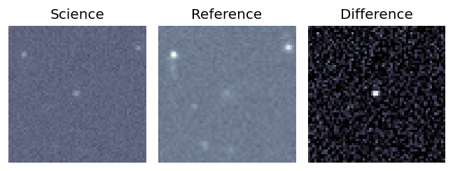
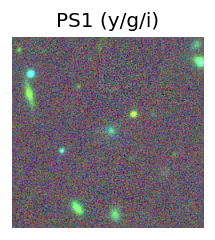
TESS: Sectors 117
SDSS (<15 kpc):Found SDSS phot-z: z=0.13; peak abs mag = -19.61
NED (10 arcsec):Found NED spec-z: z=0.08; peak abs mag = -18.47
PS1: 0 sources in 3 arcsec
LegacySurvey: 1 sources in 3 arcsec Closest: d = 0.70 arcsec, 284.7 deg (east of north) photoz=0.1 (68% bounds 0.04, 0.16), type=DEV peak abs mag = -18.39 (68% bounds -16.56, -19.57)
Extinction-corrected gr color:
From alerts: -0.22 +/- 0.24 mag
Extinction-corrected gi color:
From alerts: -0.61 +/- 0.26 mag
Extinction-corrected ri color:
From alerts: 1.34 +/- 99 mag
Consistent with synchrotron, g-r>0!
Rise Rate:
g: 0.33 mag/day
Fade Rate:
10. [ZTF] ZTF26abhxtux (FBOT?) [Back to Top] [Share] [Trigger Swift] [Fritz Alert] [Fritz Source] [Lasair]RA, Dec: 238.6798, 77.09972 15h54m43.15s, 77d 5m59.01sGalactic (l, b): 111.56715, 35.65808 ext(g-r) = 0.046
TESS: Sectors [ 14 15 19 20 21 22 25 26 40 41 47 48 49 52 53 59 60 73
74 75 76 79 80 82 86 117 119 120 121]
PS1: 0 sources in 3 arcsec
LegacySurvey: 1 sources in 3 arcsec Closest: d = 0.85 arcsec, 326.5 deg (east of north) photoz=0.14 (68% bounds 0.09, 0.19), type=REX peak abs mag = -19.36 (68% bounds -18.21, -20.04)
Extinction-corrected gr color:
From alerts: -0.18 +/- 0.26 mag
Consistent with synchrotron, g-r>0!
Rise Rate:
g: 0.21 mag/day
Fade Rate:
11. [ZTF] ZTF26abhyedb (Afterglow?) [Back to Top] [Share] [Trigger Swift] [Fritz Alert] [Fritz Source] [Lasair]RA, Dec: 272.20647, 49.83414 18h 8m49.55s, 49d50m2.89sGalactic (l, b): 77.5615, 27.03741 ext(g-r) = 0.058
TESS: Sectors [ 14 25 26 40 41 52 54 58 74 79 80 81 85 117 118 119 120]
PS1: 0 sources in 3 arcsec
LegacySurvey: 1 sources in 3 arcsec Closest: d = 7.53 arcsec, 140.8 deg (east of north) photoz=0.46 (68% bounds 0.24, 0.81), type=PSF peak abs mag = -22.68 (68% bounds -20.99, -24.15)
Extinction-corrected gr color:
From alerts: -1.33 +/- 99 mag
Rise Rate:
g: 1.35 mag/day
Fade Rate:
g: 1.38 mag/day
12. [ZTF] ZTF26abhyeyf (FBOT?) [Back to Top] [Share] [Trigger Swift] [Fritz Alert] [Fritz Source] [Lasair]RA, Dec: 265.82672, 43.07372 17h43m18.41s, 43d 4m25.40sGalactic (l, b): 69.08186, 30.12178 ext(g-r) = 0.036
TESS: Sectors [ 25 26 40 52 53 79 117 118 119]
SDSS (<15 kpc):Found SDSS phot-z: z=0.40; peak abs mag = -21.35
PS1: 0 sources in 3 arcsec
LegacySurvey: 1 sources in 3 arcsec Closest: d = 0.23 arcsec, 160.4 deg (east of north) photoz=0.28 (68% bounds 0.22, 0.35), type=REX peak abs mag = -20.36 (68% bounds -19.73, -20.88)
Extinction-corrected gr color:
From alerts: 0.05 +/- 0.17 mag
Consistent with synchrotron, g-r>0!
Rise Rate:
g: 0.2 mag/day
r: 0.47 mag/day
Fade Rate:
13. [ZTF] ZTF26abhyhmf (FBOT?) [Back to Top] [Share] [Trigger Swift] [Fritz Alert] [Fritz Source] [Lasair]RA, Dec: 278.41575, 33.62318 18h33m39.78s, 33d37m23.44sGalactic (l, b): 62.10105, 18.05386 ext(g-r) = 0.073
TESS: Sectors [ 26 40 53 54 74 80 81 118 119]
PS1: 0 sources in 3 arcsec
LegacySurvey: 1 sources in 3 arcsec Closest: d = 1.58 arcsec, 78.3 deg (east of north) photoz=0.63 (68% bounds 0.42, 0.93), type=PSF peak abs mag = -23.5 (68% bounds -22.46, -24.52)
Extinction-corrected gr color:
From alerts: 0.93 +/- 99 mag
Rise Rate:
g: 1.2 mag/day
Fade Rate:
14. [ZTF] ZTF26abhyids (FBOT?) [Back to Top] [Share] [Trigger Swift] [Fritz Alert] [Fritz Source] [Lasair]RA, Dec: 244.97565, 67.99556 16h19m54.16s, 67d59m44.00sGalactic (l, b): 100.6099, 38.86831 ext(g-r) = 0.035
TESS: Sectors [ 14 15 16 17 18 19 20 21 22 23 25 26 40 41 47 48 49 50
51 52 53 54 55 56 57 58 59 60 73 74 75 76 77 78 79 80
81 82 83 84 85 86 117 118 119 120 121]
PS1: 0 sources in 3 arcsec
LegacySurvey: 1 sources in 3 arcsec Closest: d = 1.35 arcsec, 292.2 deg (east of north) photoz=0.44 (68% bounds 0.12, 0.9), type=REX peak abs mag = -21.93 (68% bounds -18.82, -23.8)
Extinction-corrected gr color:
From alerts: -0.1 +/- 0.3 mag
Consistent with synchrotron, g-r>0!
Rise Rate:
g: 0.29 mag/day
Fade Rate:
15. [ZTF] ZTF26abhytqk (FBOT?) [Back to Top] [Share] [Trigger Swift] [Fritz Alert] [Fritz Source] [Lasair]RA, Dec: 310.50562, -7.22583 20h42m1.35s, -7d-13m-32.99sGalactic (l, b): 39.29231, -27.84215 ext(g-r) = 0.044
TESS: Sectors [ 54 81 92 116]
PS1: 0 sources in 3 arcsec
LegacySurvey: 1 sources in 3 arcsec Closest: d = 2.24 arcsec, 215.5 deg (east of north) photoz=0.21 (68% bounds 0.04, 0.66), type=PSF peak abs mag = -20.01 (68% bounds -16.4, -22.96)
Extinction-corrected gr color:
From alerts: 0.88 +/- 99 mag
Extinction-corrected gi color:
From alerts: 1.55 +/- 99 mag
Rise Rate:
g: 0.35 mag/day
Fade Rate:
16. [ZTF] ZTF26abhzdyi (FBOT?) [Back to Top] [Share] [Trigger Swift] [Fritz Alert] [Fritz Source] [Lasair]RA, Dec: 285.49683, -4.16821 19h 1m59.24s, -4d-10m-5.54sGalactic (l, b): 30.41683, -4.24301 ext(g-r) = 0.865
TESS: Sectors 80
PS1: 1 source in 3 arcsec Closest: d = 2.15 arcsec photoz=0.37+/-0.38 peak abs mag = -24.16
LegacySurvey: 0 sources in 3 arcsec
Extinction-corrected gi color:
From alerts: -1.2 +/- 99 mag
Rise Rate:
g: 0.35 mag/day
Fade Rate:
17. [ZTF] ZTF26abhzjxp (FBOT?) [Back to Top] [Share] [Trigger Swift] [Fritz Alert] [Fritz Source] [Lasair]RA, Dec: 282.76476, 46.05609 18h51m3.54s, 46d 3m21.92sGalactic (l, b): 75.62855, 19.22861 ext(g-r) = 0.053
TESS: Sectors [ 14 26 40 41 53 54 55 74 75 80 81 82 118 119 120]
PS1: 0 sources in 3 arcsec
LegacySurvey: 1 sources in 3 arcsec Closest: d = 1.98 arcsec, 286.1 deg (east of north) photoz=0.59 (68% bounds 0.43, 0.88), type=REX peak abs mag = -22.97 (68% bounds -22.12, -24.03)
Extinction-corrected gr color:
From alerts: 0.95 +/- 99 mag
Rise Rate:
r: 0.97 mag/day
Fade Rate:
18. [ZTF] ZTF26abhzono (FBOT?) [Back to Top] [Share] [Trigger Swift] [Fritz Alert] [Fritz Source] [Lasair]RA, Dec: 260.57815, 18.035 17h22m18.75s, 18d 2m6.01sGalactic (l, b): 40.13136, 27.51853 ext(g-r) = 0.064
TESS: Sectors [ 25 26 52 79 118]
PS1: 0 sources in 3 arcsec
LegacySurvey: 1 sources in 3 arcsec Closest: d = 1.69 arcsec, 82.9 deg (east of north) photoz=0.97 (68% bounds 0.6, 1.26), type=PSF peak abs mag = -24.61 (68% bounds -23.32, -25.31)
Extinction-corrected gr color:
From alerts: -1.37 +/- 99 mag
Rise Rate:
r: 0.57 mag/day
Fade Rate:
19. [ZTF] ZTF26abhzoqy (FBOT?) [Back to Top] [Share] [Trigger Swift] [Fritz Alert] [Fritz Source] [Lasair]RA, Dec: 271.01452, 31.80765 18h 4m3.49s, 31d48m27.53sGalactic (l, b): 58.02826, 23.30232 ext(g-r) = 0.057
TESS: Sectors [ 26 40 53 79 80 118]
PS1: 0 sources in 3 arcsec
LegacySurvey: 1 sources in 3 arcsec Closest: d = 1.04 arcsec, 78.4 deg (east of north) photoz=0.58 (68% bounds 0.47, 0.72), type=PSF peak abs mag = -22.95 (68% bounds -22.42, -23.53)
Extinction-corrected gr color:
From alerts: 0.95 +/- 99 mag
Rise Rate:
r: 0.54 mag/day
Fade Rate:
20. [ZTF] ZTF26abhzrqq (Afterglow?) [Back to Top] [Share] [Trigger Swift] [Fritz Alert] [Fritz Source] [Lasair]RA, Dec: 277.40917, 17.40936 18h29m38.20s, 17d24m33.68sGalactic (l, b): 46.25554, 12.53815 ext(g-r) = 0.329
TESS: Sectors [ 26 40 53 118 119]
PS1: 1 source in 3 arcsec Closest: d = 7.39 arcsec photoz=1.20+/-0.13 peak abs mag = -26.70
LegacySurvey: 0 sources in 3 arcsec
Extinction-corrected gr color:
From alerts: 0.15 +/- 0.24 mag
Consistent with synchrotron, g-r>0!
Rise Rate:
g: 0.35 mag/day
r: 2.19 mag/day
Fade Rate:
r: 0.46 mag/day
21. [ZTF] ZTF26abhzzph (FBOT?) [Back to Top] [Share] [Trigger Swift] [Fritz Alert] [Fritz Source] [Lasair]RA, Dec: 292.25168, 54.696 19h29m0.40s, 54d41m45.61sGalactic (l, b): 86.38865, 16.74972 ext(g-r) = 0.129
TESS: Sectors [ 14 15 16 40 41 53 54 55 56 60 74 75 76 80 81 82 83 119
120 121]
PS1: 0 sources in 3 arcsec
LegacySurvey: 1 sources in 3 arcsec Closest: d = 0.72 arcsec, 243.8 deg (east of north) photoz=1.01 (68% bounds 0.8, 1.2), type=REX peak abs mag = -24.63 (68% bounds -23.99, -25.09)
Extinction-corrected gr color:
From alerts: 1.09 +/- 99 mag
Rise Rate:
r: 0.4 mag/day
Fade Rate:
22. [ZTF] ZTF26abiaesr (Afterglow?) [Back to Top] [Share] [Trigger Swift] [Fritz Alert] [Fritz Source] [Lasair]RA, Dec: 297.77497, 8.21307 19h51m5.99s, 8d12m47.04sGalactic (l, b): 47.20495, -9.29913 ext(g-r) = 0.187
TESS: Sectors [54 81]
PS1: 0 sources in 3 arcsec
LegacySurvey: 0 sources in 3 arcsec
Extinction-corrected gr color:
From alerts: 1.37 +/- 99 mag
Extinction-corrected gi color:
From alerts: -0.11 +/- 0.44 mag
Extinction-corrected ri color:
From alerts: -0.76 +/- 99 mag
Consistent with synchrotron, g-r>0!
Rise Rate:
r: 0.68 mag/day
Fade Rate:
23. [ZTF] ZTF26abicxcq (FBOT?) [Back to Top] [Share] [Trigger Swift] [Fritz Alert] [Fritz Source] [Lasair]RA, Dec: 320.48162, 35.86225 21h21m55.59s, 35d51m44.10sGalactic (l, b): 82.25834, -9.97207 ext(g-r) = 0.169
TESS: Sectors [ 15 55 56 75 76 82 83 121]
PS1: 1 source in 3 arcsec Closest: d = 2.32 arcsec photoz=0.43+/-0.18 peak abs mag = -22.80
LegacySurvey: 0 sources in 3 arcsec
Extinction-corrected gr color:
From alerts: -1.4 +/- 99 mag
Rise Rate:
g: 0.63 mag/day
Fade Rate:
24. [ZTF] ZTF26abidkgy (FBOT?) [Back to Top] [Share] [Trigger Swift] [Fritz Alert] [Fritz Source] [Lasair]RA, Dec: 25.20462, 19.42718 1h40m49.11s, 19d25m37.83sGalactic (l, b): 138.65726, -41.93179 ext(g-r) = 0.054
TESS: Sectors [17 42 43 57 70 71 84]
SDSS (<15 kpc):Found SDSS phot-z: z=0.01; peak abs mag = -14.82
PS1: 0 sources in 3 arcsec
LegacySurvey: 1 sources in 3 arcsec Closest: d = 1.39 arcsec, 211.8 deg (east of north) photoz=1.0 (68% bounds 0.8, 1.19), type=PSF peak abs mag = -26.1 (68% bounds -25.51, -26.56)
Extinction-corrected gr color:
From alerts: -2.47 +/- 99 mag
Rise Rate:
g: 0.78 mag/day
Fade Rate: